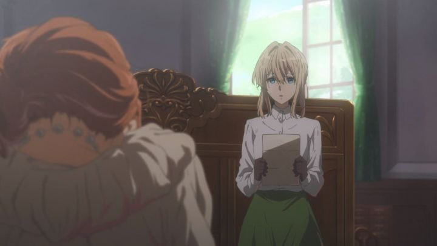

Near the end of the 2010's decade, Netflix had expanded it's influence in television and film, convincing the entire industry that streaming was the future of of the medium. They started investing in a variety of niche genres, including Japanese anime; not just hosting anime licensed by existing companies, but even co-producing, and becoming the exclusive outlet to view these shows. At the time, public opinion was mixed: yes, it was nice to have a convenient place to stream them (most people already had a Netflix subscription by this point), but it became clear that most Netflix-originals would never be released on home video, making the company the eternal gatekeepers. Regardless of sentimentality for physical media, the practice seemed successful at first, thanks in part to the license of multiple popular anime early on. This included the diverse collection of "Devilman - Crybaby," "Aggretsuko," "Kakegurui," and Kyoto Animation's 2018 show "Violet Evergarden." "Violet" in particular was a disappointing acquisition to not own on Bluray-disc. Kyoto Animation had long established themselves for producing some of the television anime, in terms of visual quality. They also had a reputation for being independent and for providing a good work environment for their animators, both unusual in the anime industry. Therefore, having Netflix involved seemed unnecessary, but presumably they made an offer that was too good to pass up, or perhaps Kyoto had seen where the international future of the industry was headed.Based on a winning-contest light novel series, "Violet Evergarden" isn't really a story of events or characters, but of emotions. In an alternate WWII-era setting, Violet is a young woman with little emotion, trained as an efficient weapon to kill the enemy. When the war ends, there is peace, but Violet's boss, general Gilbert, is killed in a final attack: Violet was there too, losing her two arms in an attempt to carry Gilbert to safety. In peacetime, Violet is brought to a company run by an acquaintance of Gilbert, specializing in mail-delivery and letter-writing, all the while with no one able to tell Violet the fate of her general. The way everyone had treated Violet up to this point, she barely acts human, but decides she wants to join the branch of the comapny called "Auto-Memory Dolls," to write letters that express the source's thoughts and emotions, in order for Violet to understand Gilbert's dying words to her: "I love you."One thing that surprised me is that Violet isn't a robot. Previous descriptions and marketing led me to believe as such, and with all the metaphors for "machines," "automata," and "dolls," and with Violet's desires to learn what it means to be human, my misunderstanding couldn't be blamed. But it becomes clear that Violet's understandings are only due to a lack of human contact, and her robotic metal arms are only a replacement for her real flesh arms, lost in the war. The setting doesn't suggest that the technology for robots even exists. The restraint from going fully steampunk in style, and remaining relatively grounded, was appreciated. Anyway, each episode is mostly episodic and indepenent: after Violet gets accustomed to how to write in a way that isn't like a formal Military-report, we focus on the individuals she writes for. Some letters are for potential romantic suitors, some are for family members, some are for spouses on the other side of the world... in fact, almost all of the letters involve love. "Violet Evergarden" is romantic and sentimental. At least, until Violet finally learns what happened to Gilbert; this occurs fairly early at episode 8, and we get a lenghtly flashback describing what happened, and a very nice place to end the series... at episode 9. The series is 13 episodes long, and those remaining episodes feel like side stories: unnecessary, but sweet, and making it clear that the series could very well go on for dozens of episodes more, like an emotional version of "Mushi-Shi" or "Kino's Journey." Frankly, the lack of a story is disappointing, especially with such a rich setting rendered on the screen (the "antagonist" feels like an afterthought at best). In setting and tone, the show is unique to what Kyoto Animation normally produces, with its closest show being "Beyond the Boundary," another show based on a contest-submitted novel, self-serious, romantic, and with small spurts of humor. I personally liked that show, but most viewer reactions seemed mixed, and I'm not surprised "Violet Evergarden" got a similar response: many people still cite it as a favoruite, but many voiced indifference. The show is more mature than most anime, but is also obvious in the emotions it tries to bring out in its viewers. If watching it, you can't afford to be pragmatic for the show to be effective. In lesser hands, I would have personally found "Violet Evergarden" to be boring. But I was always invested, if just barely, in the individual stories and characters. In fact, a handful of side-characters don't get the full attention they could have, and wouldn't turn down a second season or film to help cover that missing content. Appropriately, two films are already in production.Visually, the unusual setting makes "Violet Evergarden" especially pretty, with extra attention to architecture, clothing, and lighting effects on things like Violet's metal arms. I assume Violet's arms are 3D CGI, but it blends perflectly with her 2D body. The biggest issue I had was that, even though the setting appears to be European, there are still references to Japanese food and mannerisms, making the closest parallel country unclear. There isn't much opportunity for animation (the show is mostly about mail and letter writing), but what is present is indulgent. The production values aren't quite good enough for a theatrical film, but does set a new bar for television production. The music makes good use of string instruments for a impactful and cinematic score. Netflix's English dubs vary in quality (they focus on language-quantity rather than quality), but in this case, the English dub is about as good as any other licensor would have produced for the show, not an easy task given the content's tone. I only got around to watching "Violet Evergarden" in 2020, and by then, significant events have occurred. One was the terrorist fire in 2019, started by an individual who blamed Kyoto Animation for stealing his creative work. While I understand the frustration he might have felt, violence isn't the answer, and the world mourned for the dozens of animators and staffers who died from that event, both new and veteran, in what was labelled as the "deadliest massacre in Japan since World War II." For "Violet Evergarden" to be one of their last works before that event seemed oddly poignant: a show about the importance and impact of emotions and love. The studio clearly feels fondly of the show, pledging to finish two feature films for the series, even after the attack.Another development was the license of the first "Violet Evergarden" film, by Funimation, in early 2020. Technically, it was only the theatrical rights, and no mention of home video was included at the time. Funimation already had a recent history of working with other distributors to bring anime films to theaters, with the experience and contacts necessary to do so, despite having no further hand in it. With all this in mind, we shouldn't read too much into this license. However, my hope, and that of many fans, was that this meant Funimation would release the film on home video, and perhaps, the series as well. It deserves to be seen at its best quality, rather than the highly-compressed stream Netflix provides.All of that affects my personal feelings to "Violet Evergarden" in its favor. I tried to score it without that bias: it's a beautiful and impactful show, but not a particularly great show. Your personal feeling towards emotional content and sentimentaily will dictate your own opinion, but uncertain about how it affected me, I'm lost somewhere in the middle.
- "Ani" More reviews can be found at : https://2danicritic.github.io/ Previous review: review_Vampire_Hunter_D_-_Bloodlust Next review: review_Voices_of_a_Distant_Star